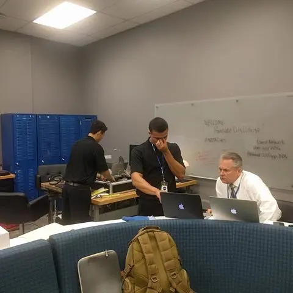

Home
Welcome to my personal Wep Page.
Here you will find all the type of projects that I have participated or created
Nasa Suits

We decided to go with this approach of using Leap Motion technology because it would definitely make us stand out from other teams. We also wanted astronaughts to be able to have intuitive gestures in order to be able to navigate through the system we designed making their tasks much easier and less dangerous.
We are using several different devices in creating our interface. Mainly, we have the Microsoft Hololens to create the Augmented Reality environment in which we are working. We also have an Intel Compute Stick mounted to the astronaught's waist and a Leap Motion Sensor that clips onto the front-top of the Hololens. The Intel Compute Stick and Leap Motion Sensor allow for us to create more precise and custom gestures for the Hololens that make it easier for astronaughts to navigate through the program interface we designed.
Riverside City College Lab Tracker
I am currently working in the development of a webpage for Riverside City College which is going to be used to track Lab Hours for hundrets of CIS and CSC Students.
We are using several different libraries and languages such as PHP, HTML, JavaScript, MySQL, LESS, CSS and others.